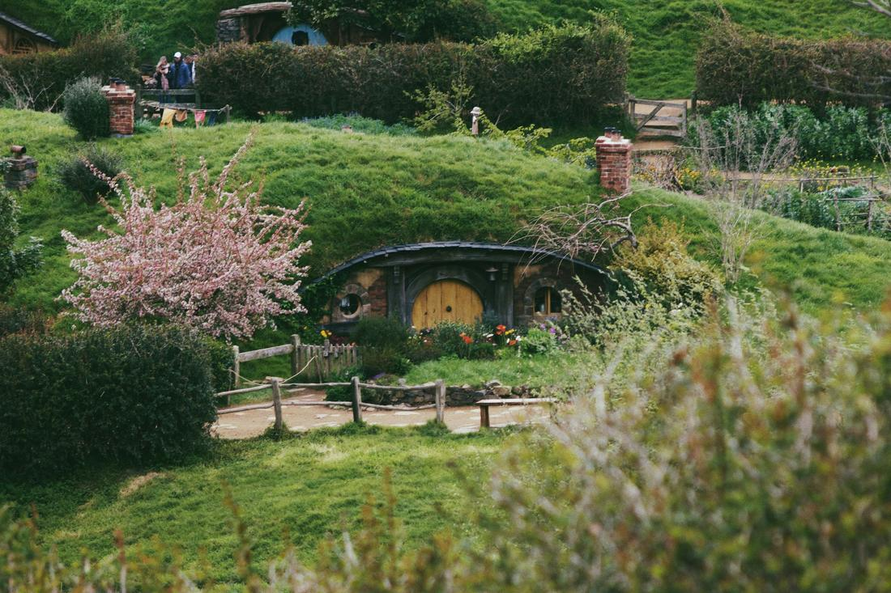
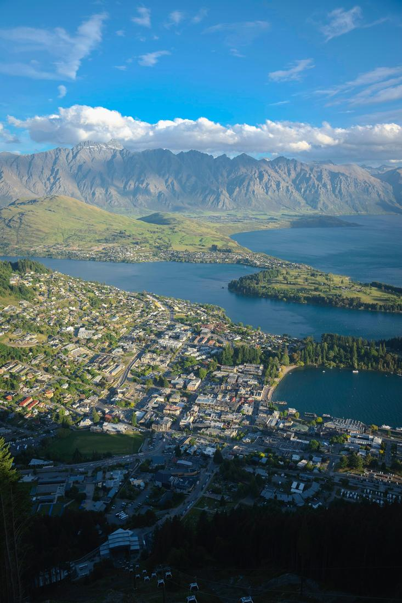

Fjords, hobbit holes, and adrenaline around every corner of the South Island.
New Zealand might be my favorite country to plan trips for, purely because of how much beauty is packed into two relatively small islands. You've got fjords carved by ancient glaciers, rolling shire-like hills straight out of a movie set, and adventure sports invented in the very towns you'll be staying in. It's clean, it's easy to get around, and it photographs like almost nowhere else on Earth.
I love that New Zealand rewards every type of traveler on your trip. Families chase hobbits through the hills of Matamata, couples cruise silently through misty fjords, and thrill-seekers throw themselves off bridges in Queenstown, the self-proclaimed adventure capital of the world. Whichever version of New Zealand you want, I can build it into a single seamless itinerary.
As your travel advisor, here's exactly how I'd build out a New Zealand itinerary — here are 3 excursions I love arranging.

Milford Sound is one of the few places I've sent clients where they've come back saying the photos genuinely didn't do it justice, which as a travel advisor is exactly what I want to hear. This package usually starts with the scenic drive from Queenstown or Te Anau along the Milford Road, stopping at the perfectly still Mirror Lakes before passing through the dramatic Homer Tunnel, blasted straight through the mountains. Once you're on the water, a cruise carries you past Mitre Peak rising sharply from the fjord, beneath the thundering drop of Stirling Falls, and often alongside pods of dolphins, fur seals lounging on the rocks, and the occasional Fiordland crested penguin. For clients who want to slow down even further, I can also arrange an overnight cruise, where you'll anchor in the fjord for the night and wake up to a silence that's genuinely hard to describe. I often pair this with a stop at the Te Anau Glowworm Caves on the way back, giving you two completely different kinds of natural wonder in a single loop.

This package is built for clients who want their New Zealand trip to feel a little bit like stepping into a story, and it starts at the Hobbiton Movie Set in Matamata, where 44 hobbit holes sit tucked into rolling green hills exactly as they appeared on screen, ending with a well-earned pint at the Green Dragon Inn. From there, we head to Rotorua, New Zealand's geothermal wonderland, where Te Puia lets you watch the Pohutu Geyser erupt on cue and learn traditional Maori carving and weaving, while nearby Wai-O-Tapu offers technicolor thermal pools in shades of orange, green, and yellow that look almost artificially painted. In the evening, many of my clients add on a traditional Maori cultural performance complete with a haka and a hangi feast cooked in an underground earth oven. If there's time, a visit to the otherworldly Waitomo Glowworm Caves, where you'll drift silently on a boat beneath thousands of tiny bioluminescent lights, is one of the most memorable half-days I book in the whole country.

Queenstown is where I send clients who want their trip to have a genuine adrenaline spike, and this package is built around the town's founding claim to fame: the Kawarau Bridge, the original site of commercial bungy jumping, where you can take the leap over the Kawarau River exactly where the sport began. From there, the Shotover Jet rockets you through a narrow canyon at speed, close enough to the rock walls to feel it in your chest, followed by a ride up the Skyline Gondola for views over Lake Wakatipu and The Remarkables mountain range before racing back down on the luge track. For a gentler afternoon, a cruise aboard the vintage steamship TSS Earnslaw across the lake to Walter Peak High Country Farm includes a sheep-shearing demonstration and afternoon tea with those same mountain views. Travelers who'd rather hike than jump can swap in a scenic trail up Ben Lomond or a stretch of the Routeburn Track instead — either way, this is New Zealand's adventure capital delivering exactly what it promises.
Prefer to plan together? I'll build your custom package. Already know what you want? Book instantly through my travel portal.